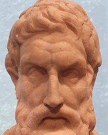

Pleasure is the beginning and end of the blessed life.
“Utility” enters British moral philosophy as the measure of value.
An Introduction to the Principles of Morals and Legislation. Mankind governed by pain and pleasure; the felicific calculus measures it by intensity, duration, certainty, and extent.
Utilitarianism. Higher pleasures over lower: “actions are right in proportion as they tend to promote happiness.”

Morality is judged by results, not intentions.
Pleasure is the only intrinsic good; pain the only intrinsic bad.
Everyone's happiness counts equally; nobody for more than one.
One must always produce the greatest possible balance of happiness.
The principle applies to all persons and all actions.
Can justify punishing the innocent if it raises total happiness (Rawls, 1971).
Every spare resource owed to strangers; nothing is merely “above duty.”
Demands betrayal of one's own convictions (Williams, 1973).
Happiness cannot be quantified or compared between people.
Only outcomes count; motives are ignored.
Ranking pleasures secretly abandons hedonism (Moore).
Utilitarianism offers one clear standard, the greatest happiness for the greatest number, but its strength is its weakness: efficiency can justify injustice and reduce dignity to numbers. Business embraces it, yet what benefits the many is not always right. It is one lens among several, to be tested against justice and dignity.